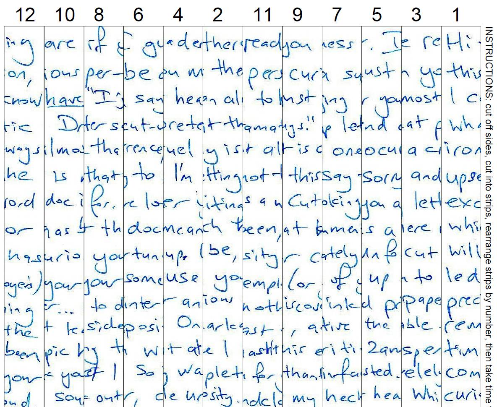

Why Cutdoc?
Send a screen-free message
We stare at screens all day and read shorter and shorter messages. How's that working for your mental health?
People used to send special, personal letters to each other but there's a catch - you need to go outside to send them.
With Cutdoc you get the best of both worlds - send a digital letter, but it can only be read off-line.

To read a Cutdoc
You need: a printer, scissors, sticky tape.
- Print the Cutdoc PDF attachment out on paper
- Cut the page along the lines into long strips
- Rearrange the strips from 1 to 12 (use sticky tape to hold them together)
- Read your decoded document.
To make a Cutdoc
You need: paper, pen or pencil, phone camera (or scanner).
- Write a one-page letter on notepad or printer paper
- Using this Cutdoc app take a Photo of your page (so it fills up most of your camera screen)
- Or Scan your page as a JPEG image using a scanner
- 'Cut' your document in the app so the image is mixed up
- Send your Cutdoc PDF via email or message.
Tips
Reading
- Have something pointy (pen or toothpick) handy to help nudge the strips into place.
Making
- Use a pen that gives a smooth and thick line, like a Uniball
- Check that the paper is flat (not curling) so your photo doesn't warp
- Take the photo near a light (or use your phone's light) so the writing is clear
- Move the camera closer so your writing almost touches the left and right edges of the screen.
Unfortunately using a printer won't save the planet, but maybe you can help save someone you know or love.
https://staplegun.github.io/cutdoc/
Source code and issues